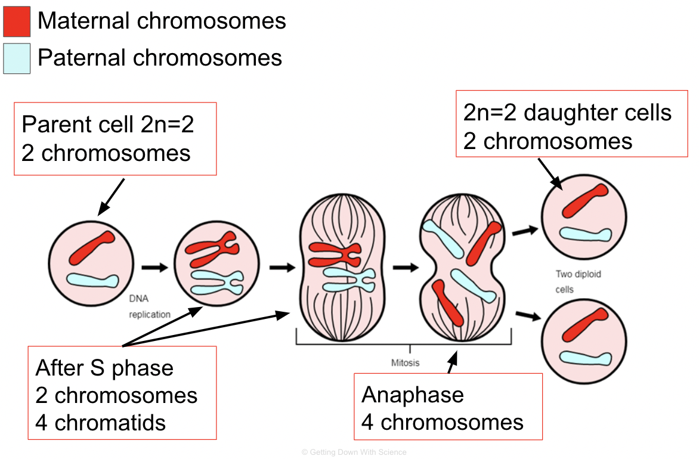

Phases of Mitosis
Prophase
- Chromatin condenses
- Nucleoli disappear
- Duplicated chromosomes appear as sister chromatids
- Mitotic spindle begins to form
-
Centrioles move away from each other
Prometaphase
- Nuclear envelope fragments
-
Microtubules enter nuclear area and some attach to kinetochores
Metaphase
- Centrioles are at opposite poles
-
Chromosomes line up at the metaphase plate
-
Microtubules are attached to each kinetochore
Anaphase
- Sister chromatids separate and move to opposite ends of the cell due to the microtubules shortening
- Cell elongates
Telophase and Cytokinesis
- Two daughter nuclei form
-
Nucleoli reappear
-
Chromosomes become less condensed
- Cytokinesis occurs
- Animals: a cleavage furrow appears due to a contractile ring of actin filaments
- Plants: vesicles produced by the Golgi travel to the middle of the cell and form a cell plate
Tracking Chromosomes
